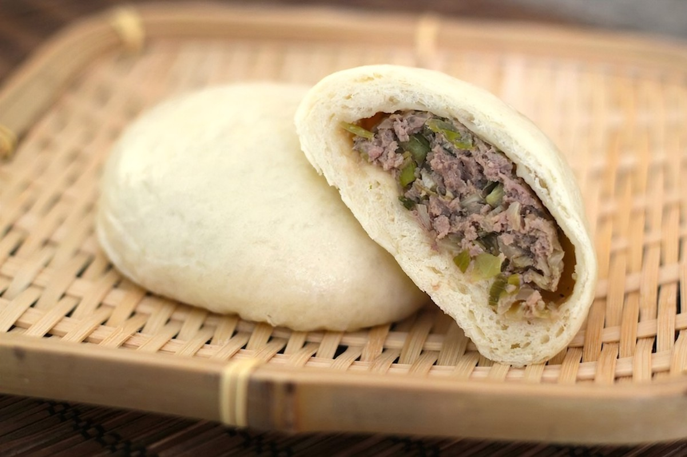

Home
Nikuman Recipe

Description
A wonderful dish in which ground beef and other fixings wraped in a bun
Ingredients
Dough:
1 cup milk
½ cup white sugar
1 (16-ounce bag) steamed bun flour
½ teaspoon salt
1 tablespoon olive oil
Filling: